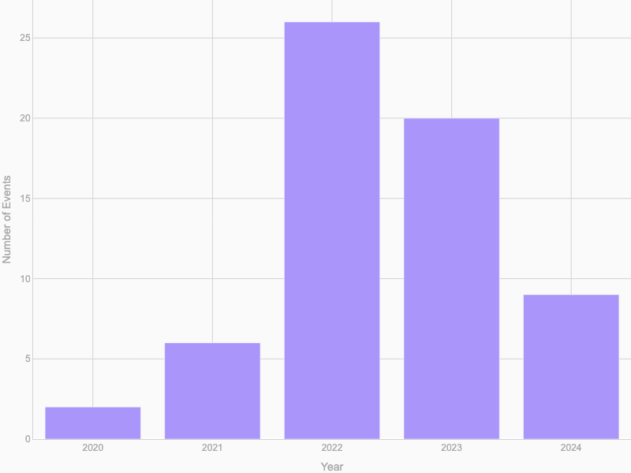
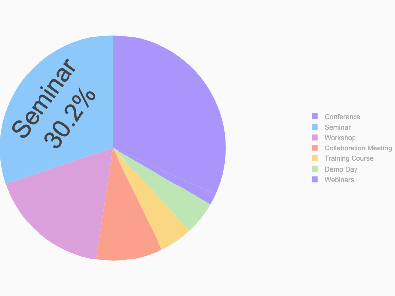
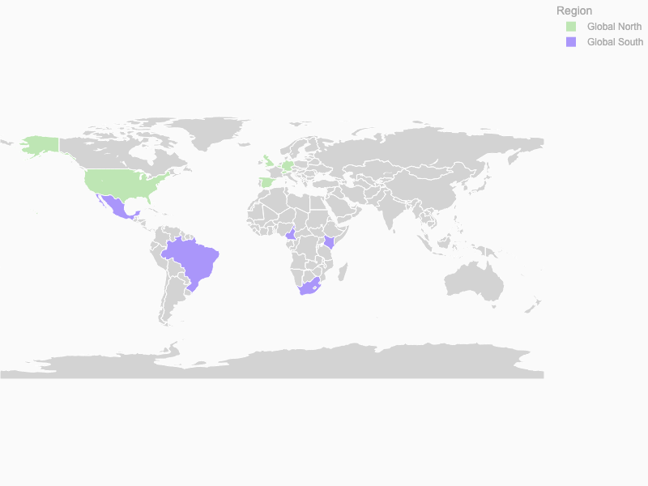
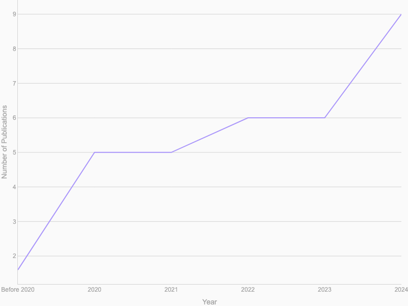
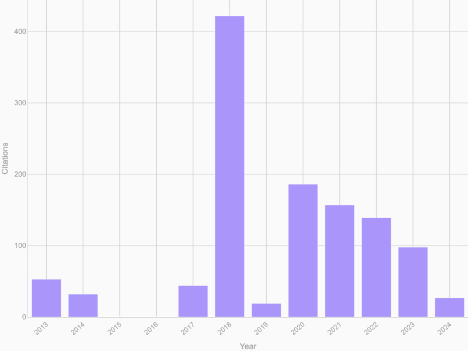
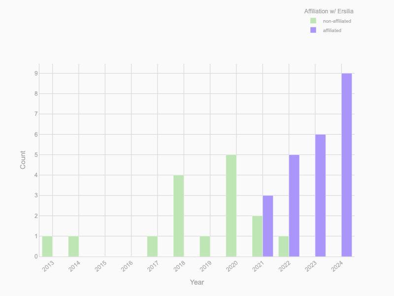
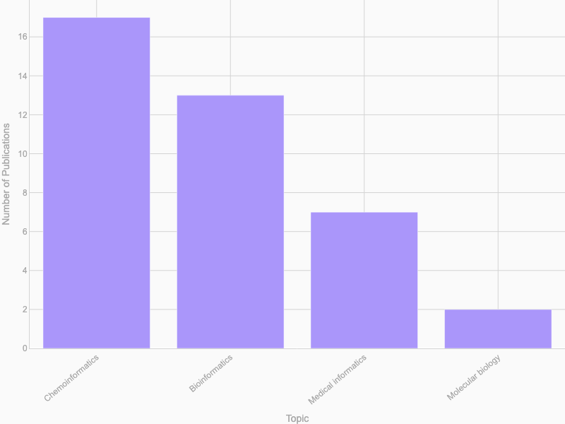
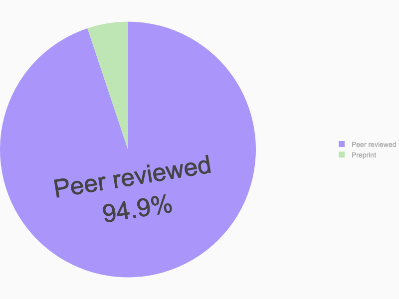
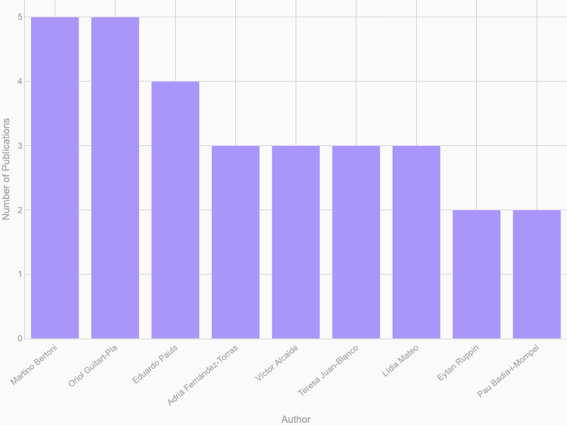

Events & Publications
Events
Event Distribution By Year
Event Breakdown By Types
Contributors' Events By Country
A total of 63 were organised by 11 countries.
*Global South: Africa, Latin America and the Caribbean, Asia (excluding Israel, Japan, and South Korea), and Oceania (excluding Australia and New Zealand).
Publications
Timeline of Publications
A total of 39 publications.
Citations For Publications By Year Of Release
A total of 1177 citations.Collaborations w/ Ersilia vs. Independent Research
Ersilia was established in 2020.Number of Publications By Topic Area
Distribution of Organisations
Top External Collaborators With Ersilia
